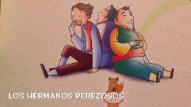

|  |
Cuentan que, en una comunidad vivía una mujer con sus tres hijos, ella ya era anciana no podía trabajar la chacra y cada vez más los alimentos que había guardado estaban escaseando. Un día cuando ya comenzaba la época de la siembra, la mujer a sus hijos les dijo: vayan a barbechar la tierra para sembrar papas, ellos dijeron: si mamá; entonces esa mañana se fueron hacer la chacra llevando su fiambre. Pero ese día no habían hecho nada los tres hermanos. En la época de la siembra les dijo: que vayan a sembrar, ellos dijeron si mamá, la madre les puso buen fiambre y los jóvenes en la parcela donde deberían de sembrar se dedicaron a jugar y se echaban. Así ellos engañaban a su pobre y triste madre. Luego llegó la época de la cosecha y la madre les ordenó que fuesen a escarbar papas nuevas, y ellos se fueron a la chacra, escogieron las mejores matas de la chacra ajena, y llevaron la papa para que cocine la madre, su madre se sintió muy contenta porque sus hijos llevaron papas grandes. Les felicitó, luego la mujer se dirigió a la chacra de papas para escarbar y miró la chacra que tenía las mejores matas y dijo: esta debe ser la chacra que han hecho mis hijos trabajadores. La mujer empezó a escarbar, cuando estuvo escarbando se le acercó una persona y le dijo: oye mujer ociosa que haces escarbando mi chacra. La mujer le dijo: yo estoy escarbando lo que han trabajado mis hijos. El dueño le dijo: tus hijos perezosos no han hecho nada, cada vez que venía a la chacra se echaban y jugaban y por la tarde regresaban a su casa. Así la madre recibió castigo. Desde ese día, se le conoce al viento, al granizo y a la helada como los jóvenes perezosos y ladrones de la chacra. |
Projecto v1
Cuento 4 : Los tres jóvenes perezosos
Obra publicada con Licencia Creative Commons Reconocimiento Compartir igual 4.0